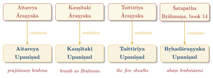

Chapter 6: The Brāhmaṇas and Āraṇyakas: Ritual Exegesis and Forest Teachings¶
Invocatory Verse
brahma jajñānaṃ prathamaṃ purastād
vi sīmataḥ suruco vena āvaḥ
The brahman first born in the east—
Vena has uncovered the shining ones from the summit.
— Atharvaveda 4.1.1; Vājasaneyi Saṃhitā 13.3
6.1 Introduction¶
The Brāhmaṇas and Āraṇyakas are the prose texts that stand between the Saṃhitās and the Upaniṣads. The Brāhmaṇas explain the solemn (śrauta) rituals: how they are to be performed, why each act is done as it is, and what it means. The Āraṇyakas (“forest books”) deal with rites and teachings considered too dangerous or secret to be learnt in the village, and they contain, or shade into, the earliest Upaniṣads. Most of this literature was composed c. 850–500 BCE (Table 1.2), as Vedic culture spread eastward from the Kuru–Pañcāla country into Kosala and Videha (Witzel 1997; Gonda 1975).
Older accounts presented the Brāhmaṇas as arid ritualism. Modern scholarship has recovered their intellectual seriousness: they develop a systematic way of thinking about correspondences between ritual, cosmos and person, and much of the vocabulary and many of the questions of the Upaniṣads come directly from them.
6.2 The Brāhmaṇa Literature¶
6.2.1 Nature and Purpose¶
The word brāhmaṇa here means an “explanation” or “pronouncement” concerning brahman, the power of the sacred formula. The later Mīmāṃsā tradition distinguishes two main kinds of statement in them:
-
Vidhi — injunctions prescribing what is to be done;
-
Arthavāda — explanatory and laudatory passages, including myths and legends, that give the reasons for the rite.
The Brāhmaṇas also contain etymologies of ritual terms, discussions between ritualists holding different views, and many narratives.
6.2.2 Major Brāhmaṇa Texts¶
The principal surviving Brāhmaṇas of each Veda are listed in Table 6.1 and described below.
| Veda | Brāhmaṇa | Notable Features |
|---|---|---|
| Ṛgveda | Aitareya | Duties of the hotṛ; Soma ritual; royal consecration; Śunaḥśepa |
| Kauṣītaki (Śāṅkhāyana) | Parallel to the Aitareya, more systematic | |
| Sāmaveda | Pañcaviṃśa (Tāṇḍya) | 25 books; the chants and the Soma sessions |
| Jaiminīya | Very large; rich in legends | |
| White Yajurveda | Śatapatha | 100 adhyāyas; the most extensive; ends with the Bṛhadāraṇyaka Upaniṣad |
| Black Yajurveda | Taittirīya | Supplements the Taittirīya Saṃhitā |
| Atharvaveda | Gopatha | The only Atharvavedic Brāhmaṇa; comparatively late |
6.2.3 The Śatapatha Brāhmaṇa¶
The Śatapatha (“hundred paths”) Brāhmaṇa of the White Yajurveda is the largest and most important Brāhmaṇa. Its Mādhyandina version has 100 adhyāyas in 14 books. Its early books are associated with Yājñavalkya, while Books 6–10, on the Agnicayana, are linked with the ritualist Śāṇḍilya. It covers the major śrauta rituals in detail, contains cosmogonic myths of Prajāpati, the flood story of Manu, the legend of Puruṛavas and Urvaśī, and the account of Videgha Māthava carrying the sacrificial fire eastward, and it ends with the Bṛhadāraṇyaka Upaniṣad.
6.2.4 The Aitareya Brāhmaṇa¶
The Aitareya Brāhmaṇa of the Ṛgveda, attributed to Mahidāsa Aitareya, has 40 adhyāyas grouped in eight pañcikās. Most of it explains the Soma sacrifice from the point of view of the hotṛ, who recites the śastras. The last two pañcikās concern royal ritual: the story of Śunaḥśepa (7.13–18), recited at the royal consecration; the “great consecration of Indra” (aindra mahābhiṣeka), with a list of kings said to have been so consecrated; and the role of the royal chaplain (purohita).
6.2.5 The Sāmavedic Brāhmaṇas¶
The Pañcaviṃśa (“twenty-five-fold”) or Tāṇḍya Mahābrāhmaṇa of the Kauthuma school explains the chants (stotras) of the Soma rituals and the long Soma sessions (sattras), including the twelve-day rite and the year-long gavām ayana. It also describes the vrātyastomas (PB 17.1–4), rites by which vrātyas—Aryans living outside Brahmanical norms—could be admitted to Vedic society. The Jaiminīya Brāhmaṇa, of the Jaiminīya school, is a very large text whose many narratives, often told with vivid detail, are not found elsewhere.
6.2.6 The Taittirīya Brāhmaṇa¶
The Taittirīya Brāhmaṇa, in three books with 8, 8 and 12 chapters, supplements the Taittirīya Saṃhitā with further formulas and explanations. Among other things it contains material on the Aśvamedha and the Puruṣamedha, lists of the lunar asterisms (nakṣatras), and, in its final “Kāṭhaka” chapters, rites such as the Nāciketa fire, together with a version of the story of Naciketas and Death that was later developed in the Kaṭha Upaniṣad.
6.2.7 The Gopatha Brāhmaṇa¶
The Gopatha Brāhmaṇa, the only Brāhmaṇa of the Atharvaveda, is later than the others and draws heavily on them. Its main concern is to establish the authority of the Atharvaveda and the claim that the brahman priest of the śrauta ritual should be an Atharvavedin.
6.3 Ritual Thought in the Brāhmaṇas¶
6.3.1 Bandhu: Correspondence¶
The central intellectual method of the Brāhmaṇas is the search for bandhus, “connections” or “equivalences”, between three levels: the ritual, the cosmos, and the human person. To know these connections is to have power over what they connect. Some of the most frequent equivalences are:
-
“The sacrifice is Viṣṇu” (yajño vai viṣṇuḥ, ŚB 1.1.2.13), and “the sacrifice is the man” (puruṣo vai yajñaḥ, ŚB 1.3.2.1);
-
Prajāpati, the creator, is the year, and the fire altar is both Prajāpati and the year;
-
the three fires correspond to the three worlds, and the metres, chants and offerings to gods, seasons and parts of the body.
Such correspondences can seem arbitrary to a modern reader, but they rest on a coherent idea: that the world is a system of homologies, and that the ritual is a model of it which can be manipulated. The Upaniṣads inherit this method and turn it toward the self (ātman), asking what single reality underlies all equivalences.
6.3.2 The Symbolism of Numbers¶
Numbers are an important part of this system:
-
3: the three worlds, three fires, three Vedas, three Soma pressings;
-
5: the five seasons (in the Vedic count), five layers of the fire altar, five breaths;
-
7: the seven metres, seven hotrās (reciting priests);
-
12: the twelve months, the twelve-day rite;
-
17: Prajāpati is “seventeenfold”;
-
33: the thirty-three gods—eight Vasus, eleven Rudras, twelve Ādityas, and two others, named in the Bṛhadāraṇyaka Upaniṣad (3.9.2) as Indra and Prajāpati;
-
360 and 10,800: the days of the ritual year and its muhūrtas, used in the symbolism of the fire altar.
6.3.3 The Five Great Sacrifices (Pañca Mahāyajñas)¶
The Śatapatha Brāhmaṇa (11.5.6.1) names five “great sacrifices” to be performed daily by the householder:
-
Brahmayajña — to Brahman (the Veda), by daily recitation (svādhyāya);
-
Devayajña — to the gods, by an oblation in the fire;
-
Pitṛyajña — to the ancestors, by offerings of water and food;
-
Manuṣyayajña — to human beings, by hospitality to guests;
-
Bhūtayajña — to all beings, by food offerings (bali) for animals, birds and spirits.
These domestic duties extend the idea of sacrifice into daily life, and they became a fixed part of the householder’s duties in the law books.
6.4 Narratives and Myths¶
6.4.1 Prajāpati¶
The creator god Prajāpati (“lord of offspring”) dominates the cosmogony of the Brāhmaṇas. Desiring to multiply, he heats himself with tapas and emits the worlds, the gods and creatures; having emitted them, he is left exhausted and “unstrung”, and the gods restore him through sacrifice. The Agnicayana, in which the altar is built as Prajāpati’s body, re-enacts this restoration. The myth anticipates the Upaniṣadic idea that the many derive from, and can be reunited with, a single source.
6.4.2 The Flood Story¶
The Śatapatha Brāhmaṇa (1.8.1) contains the earliest Indian version of the flood story. A small fish comes into Manu’s hands with his washing water and asks to be protected, promising to save him. Manu rears it until it is full-grown. It warns him of a coming flood; Manu builds a ship and ties it to the fish’s horn, and the fish draws it to a northern mountain. When the waters subside Manu, alone of all creatures, offers a sacrifice, from which a woman, Iḍā, is born, and through her he begets the human race.
The story has striking parallels with the Mesopotamian flood narratives (in the Atrahasis epic and the Epic of Gilgamesh), which are older; whether the Indian version derives from them or developed independently is debated. In the Purāṇas, the fish becomes the first incarnation (avatāra) of Viṣṇu.
6.4.3 Śunaḥśepa¶
The Aitareya Brāhmaṇa (7.13–18) tells how King Hariścandra, who had obtained a son from Varuṇa by promising to sacrifice him, delayed the sacrifice. The son, Rohita, eventually bought a Brahmin boy, Śunaḥśepa, from his impoverished father Ajīgarta to take his place. Ajīgarta himself offered, for a further fee, to bind and kill his son. Bound to the post, Śunaḥśepa prayed to a series of gods with Ṛgvedic verses; as he praised Uṣas, his fetters fell away. He refused to return to his father and was adopted by Viśvāmitra. The story, recited at the royal consecration, raises sharp questions about human sacrifice, the sale of children and paternal duty.
6.4.4 Gods and Asuras¶
Many Brāhmaṇa narratives begin “The gods and the Asuras, both offspring of Prajāpati, were contending…” (e.g. BU 1.3.1). The gods win because they discover the correct ritual, or speak the truth, while the Asuras rely on force or falsehood. The stories explain why a rite is performed in a particular way.
6.5 The Āraṇyaka Literature¶
6.5.1 Nature and Purpose¶
The Āraṇyakas (from araṇya, “wilderness, forest”) take their name from the rule that they were to be studied outside the village. The traditional explanation is that they were meant for contemplation in solitude; modern scholars note that much of their content concerns rites regarded as dangerous or secret, such as the Pravargya (the hot milk offering) and the Mahāvrata, which had to be learnt away from the settlement. They contain (the principal texts are listed in Table 6.2):
-
explanations of these special rites;
-
meditations (upāsanā) on the hidden meaning of ritual acts and formulas;
-
discussions of breath (prāṇa) as the essence of life and of the ritual;
-
passages that develop into the earliest Upaniṣads.
| Āraṇyaka | Veda | Notable Contents |
|---|---|---|
| Aitareya | Ṛgveda | Mahāvrata rite; contains the Aitareya Upaniṣad |
| Kauṣītaki (Śāṅkhāyana) | Ṛgveda | Contains the Kauṣītaki Upaniṣad |
| Taittirīya | Black Yajurveda | Pravargya; funeral rites; contains the Taittirīya and Mahānārāyaṇa Upaniṣads |
| Bṛhadāraṇyaka | White Yajurveda | The last book of the Śatapatha Brāhmaṇa; mostly Upaniṣad |
| Jaiminīya Upaniṣad Brāhmaṇa | Sāmaveda (Jaiminīya) | Also called the Talavakāra Upaniṣad Brāhmaṇa; serves as the school’s Āraṇyaka; contains the Kena Upaniṣad |
6.5.2 The Aitareya Āraṇyaka¶
Its structure is set out in Table 6.3.
| Book | Contents |
|---|---|
| I | The Mahāvrata rite and its interpretation |
| II | Meditations on breath; chapters 4–6 form the Aitareya Upaniṣad |
| III | The Saṃhitopaniṣad, on the mystical meaning of the forms of recitation |
| IV | The Mahānāmnī verses |
| V | The niṣkevalya recitation of the Mahāvrata |
The Aitareya Upaniṣad ends with the statement prajñānaṃ brahma, “Brahman is cognition” (AU 3.3), later counted among the “great sayings” of Vedānta.
6.5.3 The Taittirīya Āraṇyaka¶
The Taittirīya Āraṇyaka has ten chapters (prapāṭhakas). The first, the Aruṇa Praśna, is chanted today in many places with the Hindu Sun-salutation (sūrya-namaskāra); chapters 4–5 concern the Pravargya and chapter 6 the funeral rites; chapters 7–9 form the Taittirīya Upaniṣad; and chapter 10 is the Mahānārāyaṇa Upaniṣad, a collection of meditations and formulas much used in later worship (Figure 6.1).

6.6 Internalising the Sacrifice¶
A key development of this period is the internalisation of ritual: the sacrifice comes to be understood as something that can take place within the person. The Chāndogya Upaniṣad (5.19–24) teaches that a person who knows the “universal self” (vaiśvānara ātman) offers the Agnihotra simply by eating, the first mouthfuls being oblations to the breaths. The Kauṣītaki Upaniṣad (2.5) describes an “inner Agnihotra” in which one continually offers speech into breath and breath into speech. Later texts call this the prāṇāgnihotra, “fire-offering in the breaths” (Table 6.4).
| Principle | Sanskrit Term | Description |
|---|---|---|
| Correspondence | Bandhu | Ritual, cosmic and bodily elements are linked by hidden equivalences |
| Bodily application | Adhyātma | Ritual and cosmic elements are identified with faculties of the person |
| Meditation | Upāsanā | Contemplating the meaning of a rite or formula, sometimes in place of performing it |
| Breath-sacrifice | Prāṇāgnihotra | The fire-offering is performed in the breaths, as in eating |
This development did not mean that ritual was abandoned—the śrauta and domestic rites continued, and continue today—but it opened the way for the Upaniṣads’ emphasis on knowledge, and for later ideas such as the Bhagavadgītā’s “sacrifice of knowledge” (jñānayajña).
6.7 The Great Sayings (Mahāvākyas)¶
Later Advaita Vedānta selected four sentences, one from an Upaniṣad of each Veda, as “great sayings” summing up the identity of self and Brahman. The grouping is a later scholastic convention, not a Vedic one, but the sentences themselves are Upaniṣadic (see Volume 2, Upaniṣad Dīpikā) (Table 6.5):
| Mahāvākya | Meaning | Source | Veda |
|---|---|---|---|
| Prajñānaṃ brahma | “Brahman is cognition” | Aitareya Up. 3.3 | Ṛgveda |
| Ahaṃ brahmāsmi | “I am Brahman” | Bṛhadāraṇyaka Up. 1.4.10 | White Yajurveda |
| Tat tvam asi | “That you are” | Chāndogya Up. 6.8.7 | Sāmaveda |
| Ayam ātmā brahma | “This self is Brahman” | Māṇḍūkya Up. 2 | Atharvaveda |
Bṛhadāraṇyaka Upaniṣad 1.4.10
brahma vā idam agra āsīt tad ātmānam evāvet
ahaṃ brahmāsmīti tasmāt tat sarvam abhavat
In the beginning this world was Brahman, and it knew only itself:
“I am Brahman.” As a result, it became the Whole.
— Bṛhadāraṇyaka Upaniṣad 1.4.10
6.8 Language, History and Science in the Brāhmaṇas¶
The Brāhmaṇas are the oldest substantial body of Indian prose, and among the oldest prose in any Indo-European language (only Hittite prose is clearly older). Their language bridges the Vedic of the Saṃhitās and the Sanskrit described by Pāṇini. They are also an essential source for the social history of the later Vedic period, for the eastward spread of Vedic culture, and for the growth of priestly specialisation.
6.8.1 Mathematics and Astronomy¶
The construction of altars presupposes the practical geometry later set out in the Śulba Sūtras (Chapter 7). The Brāhmaṇas also contain calendrical material: lists of the nakṣatras, the twelve months and their intercalation, and the five-year cycle of named years.
One passage has played a large part in debates about dating. The Śatapatha Brāhmaṇa (2.1.2.3) says that the Kṛttikās (Pleiades) “do not swerve from the eastern quarter”. S. B. Dikshit argued in the nineteenth century that this describes the Pleiades rising due east, which would place the observation around 3000 BCE. Others reply that the statement may be approximate, or may preserve an older tradition, and that the language of the Śatapatha belongs clearly to the early first millennium BCE. The passage illustrates both the value and the limits of astronomical dating.
6.9 Summary¶
The Brāhmaṇas are easily mistaken for commentaries on ritual and nothing more. Read as a whole, they are the first Indian attempt to think systematically: to ask why an act is done, to answer by finding the hidden equivalence (bandhu) that links it to the cosmos and the person, and to argue with other teachers about the answer. Their prose, their myths and their debates are also the richest source for the society of the later Vedic period. The Āraṇyakas show the same method applied to dangerous and secret rites, and then turned inward, until the knowledge of the equivalences mattered more than the act; that is the point at which the Upaniṣads begin.
Closing Verse
yo ha vai jyeṣṭhaṃ ca śreṣṭhaṃ ca veda
jyeṣṭhaś ca ha vai śreṣṭhaś ca bhavati
He who knows the eldest and the best
becomes the eldest and the best.
— Chāndogya Upaniṣad 5.1.1